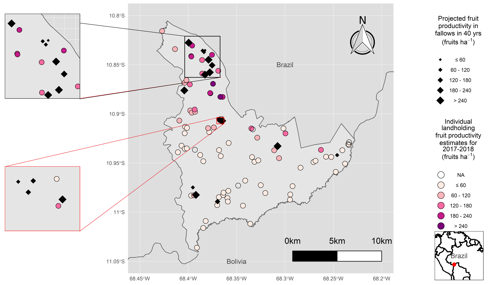

Projects
These are the most exciting projects I have worked along my career
Brazil nut productivity estimates in secondary forest
Master thesis
 This project was the first project I used programming languages (R and Python) to manipulate, analyze and create visualizations of data. It was during this project that I felt in love with data analytics, eventhough I didn't even knew that was a professional option.
Master Thesis - This study examines the extent to which forest residents could increase nut productivity by allowing their fallows to grow into Brazil nut rich forests. Brazil nut (Bertholletia excelsa) is considered the ‘cornerstone non-timber species of Amazonian conservation’. Nuts (or seeds) of this massive tree are harvested by local people living in and near old-growth forests, supporting local livelihoods and regional economies. Secondary forests, however, particularly plots previously used for agriculture (swidden fallows), present better B. excelsa seedling and sapling recruitment than mature forest. But no study has looked at the future perspectives of secondary forests.
Summary of methods:
- Model written in python to estimate growht, survival and fruit production in 10, 20,30 and 40 years.
- Management of the model’s output data in Rstudio (R).
- Elaboration of map by integrating the result of the data management with shape files with study area delimitation, study sites location and properties location.
Governance and Infrastructure In the Amazon
Geospatial group
 I was part of the Community of Practice and Learning Focused on Governance and Infrastructure in the Amazon (GIA). More specifically, I was part of the Geospatial group, where our objective was to tackle the project using remote sensing and GIS methods and data to analyze the results from a geographic point of view.
I was part of the Community of Practice and Learning Focused on Governance and Infrastructure in the Amazon (GIA). More specifically, I was part of the Geospatial group, where our objective was to tackle the project using remote sensing and GIS methods and data to analyze the results from a geographic point of view.
I was responsible for the creation of maps used in the participatory map exercises. After initial development, we run a couple of tests and adjusted the map accordingly. After the actual local seminars, I was responsible for developing the result's visualization (digital map).